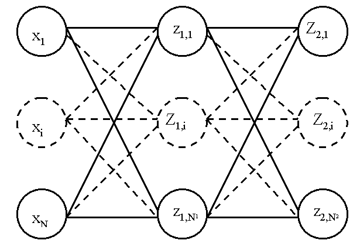

Définition des réseaux de neurones multi-couches¶
Les réseaux de neurones multi-couches (ou perceptrons) définissent une classe de fonctions dont l’intérêt est de pouvoir approcher n’importe quelle fonction continue à support compact (voir théorème sur la densité). Aucun autre type de réseau de neurones ne sera étudié et par la suite, tout réseau de neurones sera considéré comme multi-couches (donc pas les réseau de Kohonen).
Un neurone¶
Définition D1 : neurone
Un neurone à  entrées est une fonction
entrées est une fonction
 définie par :
définie par :

 ,
, 
 avec
avec 
Cette définition est inspirée du neurone biologique, les poids jouant le rôle
de synapses, le vecteur  celui des entrées
et
celui des entrées
et  celui des coefficients ou poids.
Le coefficient est appelé le biais et souvent noté .
La fonction g est appelée fonction de transfert ou fonction de seuil.
celui des coefficients ou poids.
Le coefficient est appelé le biais et souvent noté .
La fonction g est appelée fonction de transfert ou fonction de seuil.
Figure F1 : neurone graphique
![\begin{picture}(100,80)(0,0)
\put(10,0) {\circle{20}}
\put(10,25) {\circle{20}}
\put(10,50) {\circle{20}}
\put(10,0) {\makebox(3,3){$x_1$}}
\put(10,25) {\makebox(3,3){$x_i$}}
\put(10,50) {\makebox(3,3){$x_p$}}
\put(80,25) {\circle{35}}
\put(78,25) {\makebox(6,3){$\;y \overset{f}{\rightarrow} z$}}
\put(20,25) {\line(1,0){43}}
\drawline(20,0)(63,25)
\drawline(20,50)(63,25)
\put(30,50) {\makebox(3,3){$w_p$}}
\put(30,18) {\makebox(3,3){$w_i$}}
\put(30,-2) {\makebox(3,3){$w_1$}}
\put(48,20) {\makebox(3,3){$\sum$}}
\put(50,-20) {\circle{20}}
\put(50,-20) {\makebox(3,3){$1$}}
\drawline(50,-10)(63,25)
\put(50,5) {\makebox(3,3){$b$}}
\end{picture}](../../_images/math/05b2ca10116e9f34ec14eeb334a5f025f6c6b2a2.svg)
Le vecteur
joue le rôle des entrées.
 est appelé parfois le potentiel.
est appelé parfois le potentiel.
 .
est appelée la sortie du neurone.
.
est appelée la sortie du neurone.
 est appelée la fonction de transfert ou de seuil.
.
est appelée la fonction de transfert ou de seuil.
.
La réprésentation graphique est plus souvent celle qu’on retient. Ce schéma est également plus proche de sa définition biologique et dissocie mieux les rôles non symétriques des entrées et des poids. Des exemples de fonctions de transfert sont donnés par la table qui suit. Les plus couramment utilisées sont les fonctions linéaire et sigmoïde.
exemples de fonction de transfert ou de seuil |
expression |
|---|---|
escalier |
|
linéaire |
|
sigmoïde entre |
|
sigmoïde entre |
|
normale |
|
exponentielle |
|
relu |


La plupart des fonctions utilisées sont dérivables et cette propriété s’étend à tout assemblage de neurones, ce qui permet d’utiliser l’algorithme de rétropropagation découvert par [Rumelhart1986]. Ce dernier permet le calcul de la dérivée ouvre ainsi les portes des méthodes d’optimisation basées sur cette propriété. La fonction relu a progressivement remplacé la fonction sigmoïde sur les couches cachées car elle est non linéaire et beaucoup plus rapide à calculer.
Une couche de neurones¶
Définition D2 : couche de neurones
Soit et  deux entiers naturels,
on note
deux entiers naturels,
on note  avec
avec  .
Une couche de neurones et entrées est une fonction :
.
Une couche de neurones et entrées est une fonction :
vérfifiant :
 est un neurone.
est un neurone.
Une couche de neurones représente la juxtaposition de plusieurs neurones partageant les mêmes entrées mais ayant chacun leur propre vecteur de coefficients et leur propre sortie.
Un réseau de neurones : le perceptron¶
Définition D3 : réseau de neurones multi-couches ou perceptron
Un réseau de neurones multi-couches à sorties,
entrées et  couches est une liste de couches
connectées les unes aux autres de telle sorte que :
couches est une liste de couches
connectées les unes aux autres de telle sorte que :
, chaque couche
 possède neurones et
possède neurones et  entrées
entrées, de plus
 et
et
Les coefficients de la couche sont notés
 , cette couche définit une fonction
, cette couche définit une fonction
 .
Soit la suite définie par :
.
Soit la suite définie par :

On pose ,
le réseau de neurones ainsi défini est une fonction  telle que :
telle que :

Figure F2 : Modèle du perceptron multi-couche (multi-layer perceptron, MLP)
{kind=link}
 : entrées
: entrées- nombre de neurones sur la couche
 ,
, 
sortie du neurone
, de la couche  , par extension,
, par extension, potentiel du neurone
de la couche  coefficient associé à l’entrée
coefficient associé à l’entrée  du neurone de la couche ,
du neurone de la couche , biais du neurone de la couche
biais du neurone de la couche  fonction de seuil du neurone de la couche
fonction de seuil du neurone de la couche
On note la matrice des poids associée à la couche .
De la même manière, est le vecteur des biais associée à la couche ,
 ,
,  sont les objets vectoriels correspondant.
On considère que les entrées forment la couche
sont les objets vectoriels correspondant.
On considère que les entrées forment la couche  de
manière à simplifier les écritures. Ainsi,
chaque couche du perceptron a pour entrées les sorties
de la couche
de
manière à simplifier les écritures. Ainsi,
chaque couche du perceptron a pour entrées les sorties
de la couche  . Cette définition est plus facile
à illustrer qu’à énoncer (voir Modèle du perceptron)
et rappelle le rôle non symétrique des entrées et des poids.
Le mécanisme qui permet de calculer les sorties d’un réseau de neurones
sachant ses poids est appelé propagation.
. Cette définition est plus facile
à illustrer qu’à énoncer (voir Modèle du perceptron)
et rappelle le rôle non symétrique des entrées et des poids.
Le mécanisme qui permet de calculer les sorties d’un réseau de neurones
sachant ses poids est appelé propagation.
Algorithme A1 : Propagation
Cet algorithme s’applique à un réseau de neurones vérifiant la
définition du perceptron. Il s’agit
de calculer les sorties de ce réseau connaissant ses poids
et ses entrées  .
.
Vient ensuite le calcul itératif de la suite :
 :
:

Le nombre de couches d’un réseau de neurones n’est pas limité. Les réseaux de deux couches (une couche pour les entrées, une couche de sortie) sont rarement utilisés. Trois couches sont nécessaires (une couche pour les entrées, une couche dite cachée, une couche de sortie) pour construire des modèles avec une propriété intéressante de densité.